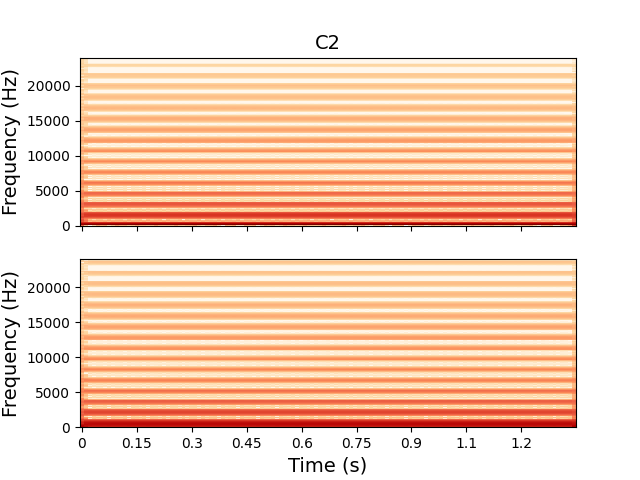
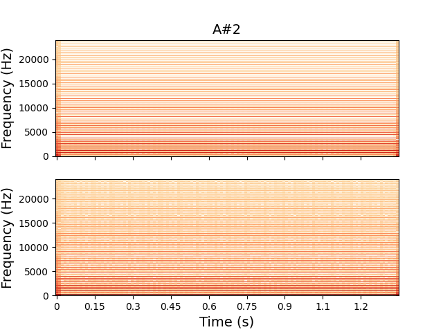
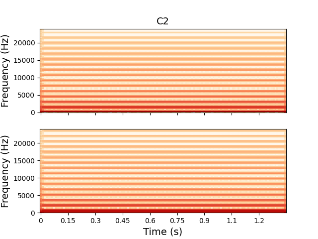
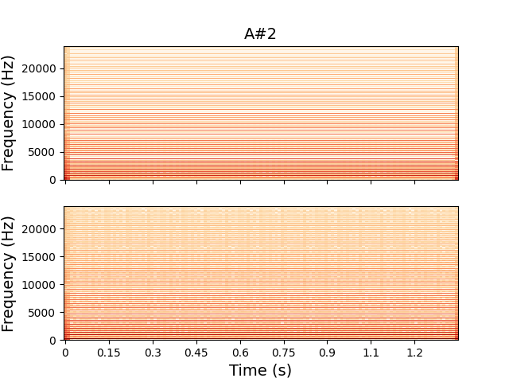

Aliasing
The proposed methodology learns the target waveshape and replicates any aliasing present in the recordings. Therefore, the quality of the analog antialiasing filter used during the recording of the analog VCO and the digital antialiasing filter applied during data downsampling significantly affect the model's aliasing performance. The following frequency domain plots show that the model reproduces the frequency content of the target recordings without introducing additional aliasing. The plots refer to triangle waves emulated by the LSTM model, computed using 2048 FFT points.
The following plots show the spectra of the waves emulated by the LSTM model. On top is shown the target, while on the bottom is the emulation. The spectra are computed using 2048 FFT points.
Triangle Wave 


